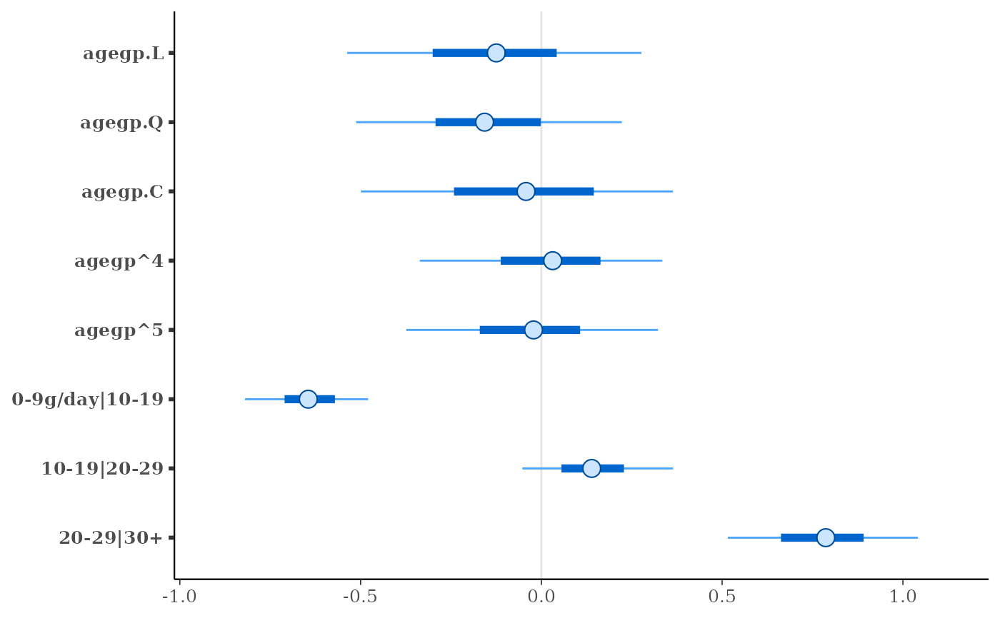

Bayesian inference for ordinal (or binary) regression models under a proportional odds assumption.
Usage
stan_polr(
formula,
data,
weights,
...,
subset,
na.action = getOption("na.action", "na.omit"),
contrasts = NULL,
model = TRUE,
method = c("logistic", "probit", "loglog", "cloglog", "cauchit"),
prior = R2(stop("'location' must be specified")),
prior_counts = dirichlet(1),
shape = NULL,
rate = NULL,
prior_PD = FALSE,
algorithm = c("sampling", "meanfield", "fullrank"),
adapt_delta = NULL,
do_residuals = NULL
)
stan_polr.fit(
x,
y,
wt = NULL,
offset = NULL,
method = c("logistic", "probit", "loglog", "cloglog", "cauchit"),
...,
prior = R2(stop("'location' must be specified")),
prior_counts = dirichlet(1),
shape = NULL,
rate = NULL,
prior_PD = FALSE,
algorithm = c("sampling", "meanfield", "fullrank"),
adapt_delta = NULL,
do_residuals = algorithm == "sampling"
)Arguments
- formula, data, subset
Same as
polr, but we strongly advise against omitting thedataargument. Unlessdatais specified (and is a data frame) many post-estimation functions (includingupdate,loo,kfold) are not guaranteed to work properly.- weights, na.action, contrasts, model
Same as
polr, but rarely specified.- ...
Further arguments passed to the function in the rstan package (
sampling,vb, oroptimizing), corresponding to the estimation method named byalgorithm. For example, ifalgorithmis"sampling"it is possible to specifyiter,chains,cores, and other MCMC controls.Another useful argument that can be passed to rstan via
...isrefresh, which specifies how often to print updates when sampling (i.e., show the progress everyrefreshiterations).refresh=0turns off the iteration updates.- method
One of 'logistic', 'probit', 'loglog', 'cloglog' or 'cauchit', but can be abbreviated. See
polrfor more details.- prior
Prior for coefficients. Should be a call to
R2to specify the prior location of the \(R^2\) but can beNULLto indicate a standard uniform prior. Seepriors.- prior_counts
A call to
dirichletto specify the prior counts of the outcome when the predictors are at their sample means.- shape
Either
NULLor a positive scalar that is interpreted as the shape parameter for aGammaDistribution on the exponent applied to the probability of success when there are only two outcome categories. IfNULL, which is the default, then the exponent is taken to be fixed at \(1\).- rate
Either
NULLor a positive scalar that is interpreted as the rate parameter for aGammaDistribution on the exponent applied to the probability of success when there are only two outcome categories. IfNULL, which is the default, then the exponent is taken to be fixed at \(1\).- prior_PD
A logical scalar (defaulting to
FALSE) indicating whether to draw from the prior predictive distribution instead of conditioning on the outcome.- algorithm
A string (possibly abbreviated) indicating the estimation approach to use. Can be
"sampling"for MCMC (the default),"optimizing"for optimization,"meanfield"for variational inference with independent normal distributions, or"fullrank"for variational inference with a multivariate normal distribution. Seerstanarm-packagefor more details on the estimation algorithms. NOTE: not all fitting functions support all four algorithms.- adapt_delta
Only relevant if
algorithm="sampling". See the adapt_delta help page for details.- do_residuals
A logical scalar indicating whether or not to automatically calculate fit residuals after sampling completes. Defaults to
TRUEif and only ifalgorithm="sampling". Settingdo_residuals=FALSEis only useful in the somewhat rare case thatstan_polrappears to finish sampling but hangs instead of returning the fitted model object.- x
A design matrix.
- y
A response variable, which must be a (preferably ordered) factor.
- wt
A numeric vector (possibly
NULL) of observation weights.- offset
A numeric vector (possibly
NULL) of offsets.
Value
A stanreg object is returned
for stan_polr.
A stanfit object (or a slightly modified
stanfit object) is returned if stan_polr.fit is called directly.
Details
The stan_polr function is similar in syntax to
polr but rather than performing maximum likelihood
estimation of a proportional odds model, Bayesian estimation is performed
(if algorithm = "sampling") via MCMC. The stan_polr
function calls the workhorse stan_polr.fit function, but it is
possible to call the latter directly.
As for stan_lm, it is necessary to specify the prior
location of \(R^2\). In this case, the \(R^2\) pertains to the
proportion of variance in the latent variable (which is discretized
by the cutpoints) attributable to the predictors in the model.
Prior beliefs about the cutpoints are governed by prior beliefs about the
outcome when the predictors are at their sample means. Both of these
are explained in the help page on priors and in the
rstanarm vignettes.
Unlike polr, stan_polr also allows the "ordinal"
outcome to contain only two levels, in which case the likelihood is the
same by default as for stan_glm with family = binomial
but the prior on the coefficients is different. However, stan_polr
allows the user to specify the shape and rate hyperparameters,
in which case the probability of success is defined as the logistic CDF of
the linear predictor, raised to the power of alpha where alpha
has a gamma prior with the specified shape and rate. This
likelihood is called “scobit” by Nagler (1994) because if alpha
is not equal to \(1\), then the relationship between the linear predictor
and the probability of success is skewed. If shape or rate is
NULL, then alpha is assumed to be fixed to \(1\).
Otherwise, it is usually advisible to set shape and rate to
the same number so that the expected value of alpha is \(1\) while
leaving open the possibility that alpha may depart from \(1\) a
little bit. It is often necessary to have a lot of data in order to estimate
alpha with much precision and always necessary to inspect the
Pareto shape parameters calculated by loo to see if the
results are particularly sensitive to individual observations.
Users should think carefully about how the outcome is coded when using
a scobit-type model. When alpha is not \(1\), the asymmetry
implies that the probability of success is most sensitive to the predictors
when the probability of success is less than \(0.63\). Reversing the
coding of the successes and failures allows the predictors to have the
greatest impact when the probability of failure is less than \(0.63\).
Also, the gamma prior on alpha is positively skewed, but you
can reverse the coding of the successes and failures to circumvent this
property.
References
Nagler, J., (1994). Scobit: An Alternative Estimator to Logit and Probit. American Journal of Political Science. 230 – 255.
See also
stanreg-methods and
polr.
The vignette for stan_polr.
https://mc-stan.org/rstanarm/articles/
Examples
if (.Platform$OS.type != "windows" || .Platform$r_arch !="i386") {
fit <- stan_polr(tobgp ~ agegp, data = esoph, method = "probit",
prior = R2(0.2, "mean"), init_r = 0.1, seed = 12345,
algorithm = "fullrank") # for speed only
print(fit)
plot(fit)
}
#> Chain 1: ------------------------------------------------------------
#> Chain 1: EXPERIMENTAL ALGORITHM:
#> Chain 1: This procedure has not been thoroughly tested and may be unstable
#> Chain 1: or buggy. The interface is subject to change.
#> Chain 1: ------------------------------------------------------------
#> Chain 1:
#> Chain 1:
#> Chain 1:
#> Chain 1: Gradient evaluation took 4.5e-05 seconds
#> Chain 1: 1000 transitions using 10 leapfrog steps per transition would take 0.45 seconds.
#> Chain 1: Adjust your expectations accordingly!
#> Chain 1:
#> Chain 1:
#> Chain 1: Begin eta adaptation.
#> Chain 1: Iteration: 1 / 250 [ 0%] (Adaptation)
#> Chain 1: Iteration: 50 / 250 [ 20%] (Adaptation)
#> Chain 1: Iteration: 100 / 250 [ 40%] (Adaptation)
#> Chain 1: Iteration: 150 / 250 [ 60%] (Adaptation)
#> Chain 1: Iteration: 200 / 250 [ 80%] (Adaptation)
#> Chain 1: Success! Found best value [eta = 1] earlier than expected.
#> Chain 1:
#> Chain 1: Begin stochastic gradient ascent.
#> Chain 1: iter ELBO delta_ELBO_mean delta_ELBO_med notes
#> Chain 1: 100 -135.991 1.000 1.000
#> Chain 1: 200 -131.110 0.519 1.000
#> Chain 1: 300 -128.295 0.353 0.037
#> Chain 1: 400 -127.636 0.266 0.037
#> Chain 1: 500 -127.828 0.213 0.022
#> Chain 1: 600 -127.903 0.178 0.022
#> Chain 1: 700 -127.740 0.153 0.005 MEDIAN ELBO CONVERGED
#> Chain 1:
#> Chain 1: Drawing a sample of size 1000 from the approximate posterior...
#> Chain 1: COMPLETED.
#> stan_polr
#> family: ordered [probit]
#> formula: tobgp ~ agegp
#> observations: 88
#> ------
#> Median MAD_SD
#> agegp.L -0.1 0.3
#> agegp.Q -0.2 0.2
#> agegp.C 0.0 0.3
#> agegp^4 0.0 0.2
#> agegp^5 0.0 0.2
#>
#> Cutpoints:
#> Median MAD_SD
#> 0-9g/day|10-19 -0.6 0.1
#> 10-19|20-29 0.1 0.1
#> 20-29|30+ 0.8 0.2
#>
#> ------
#> * For help interpreting the printed output see ?print.stanreg
#> * For info on the priors used see ?prior_summary.stanreg
